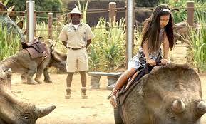

We don't allow children to ride wild animals around at zoos, and PETA advocates against using animals for entertainment. So why is it okay for Jurassic World to do those things?
We need to ban together and protest against the use of dinosaurs in shows at Jurassic World. Not only are you harming the dinosaurs at Jurassic World, but you're risking the safety of your children when you allow them to participate in these events. It's much safer (and humane) if we stop these attractions. Not only is it wrong to ride them but it is wrong to gawk at them in cages. Getting rid of dinosaur petting zoos at Jurassic World is the first step in shutting them dow. Not only do we want to target Jurassic World for their abuse, we want to pinpoint these actions in zoos all over the world. However, Jurassic World is the most dangerous of them all.